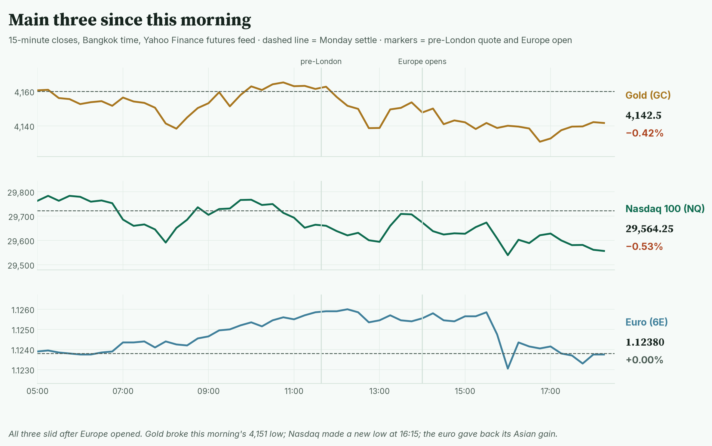
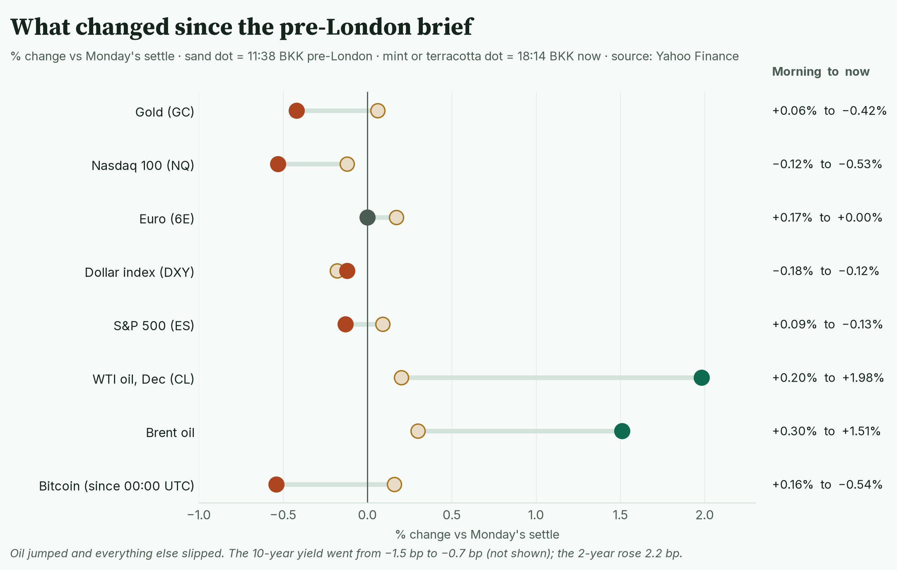
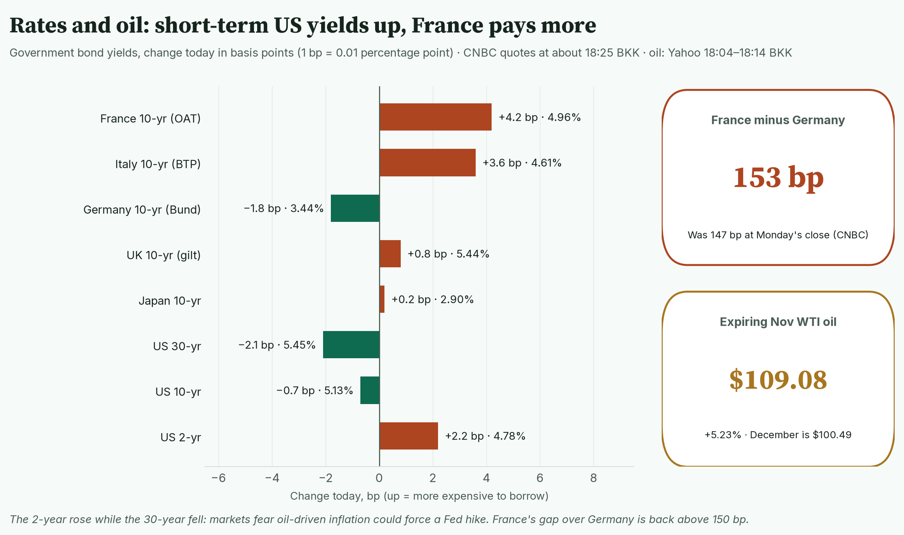
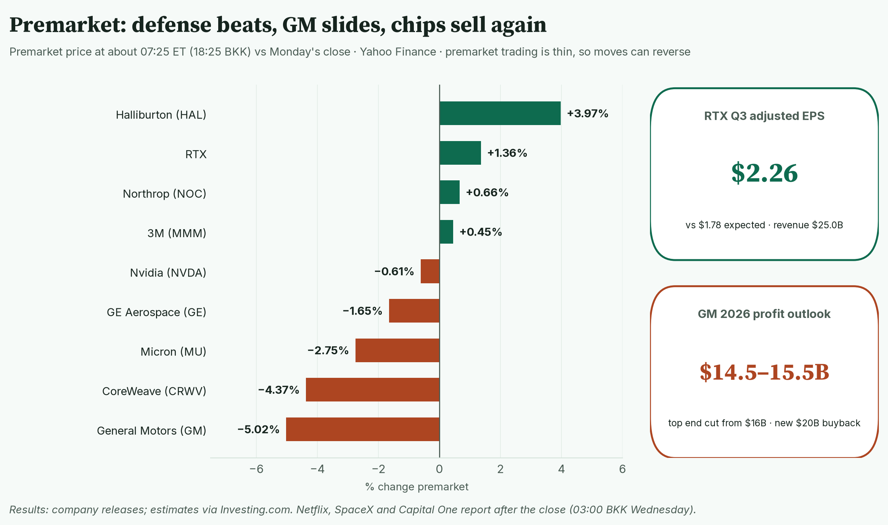
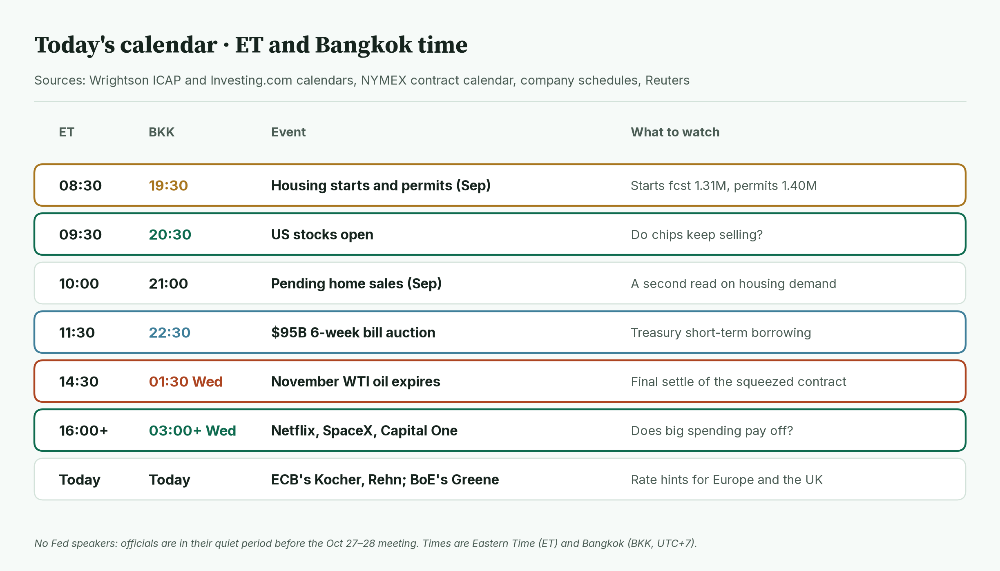
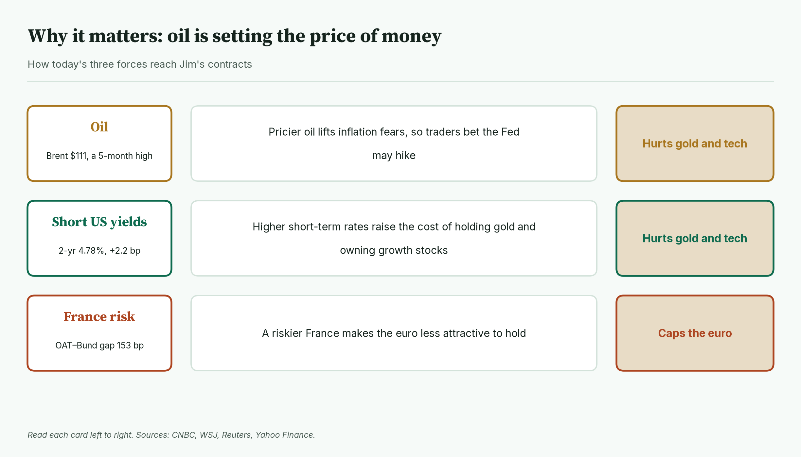
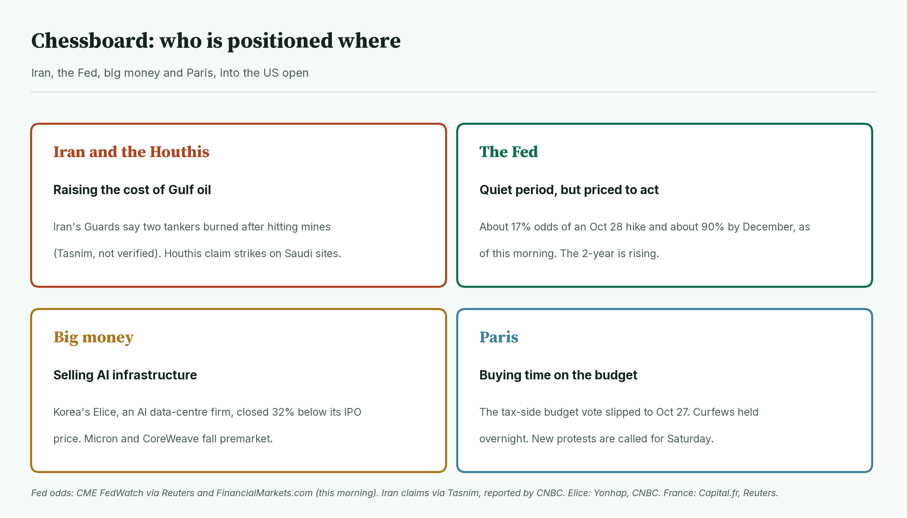
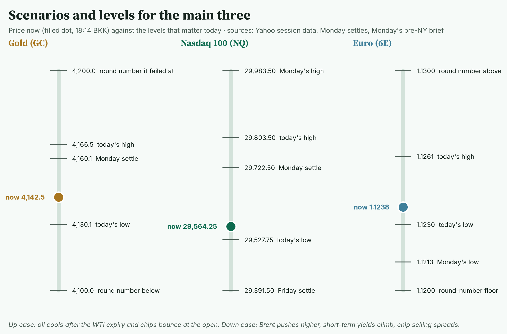
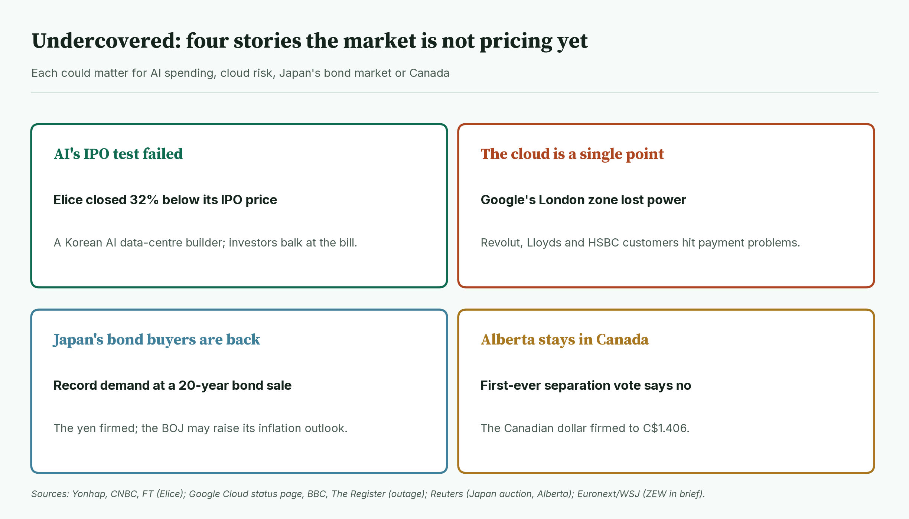
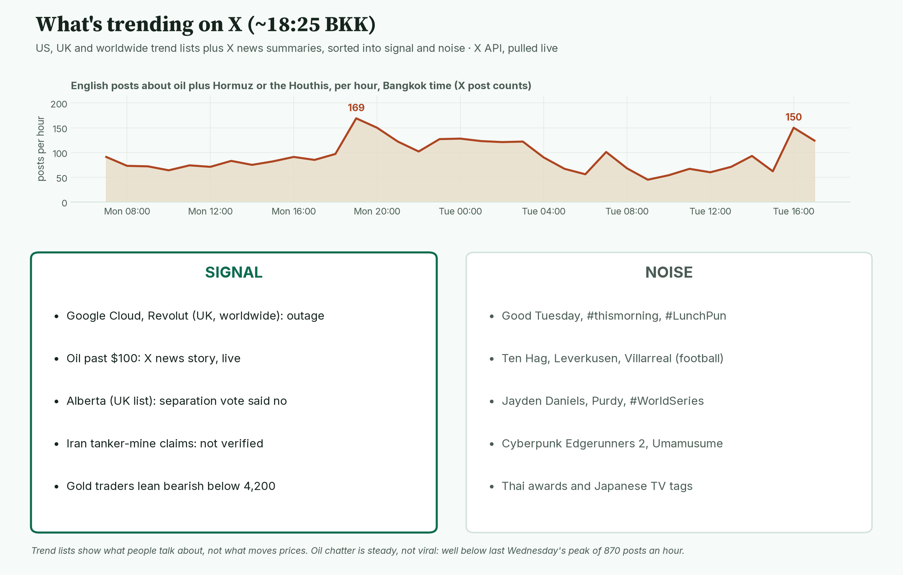

April · Market Intel, pre-NY · Tue Oct 20, 2026 · ~18:40 BKK / ~07:40 ET
Headline: oil is back in charge. Brent hit $111, a five-month high, and the expiring November US oil contract jumped 5%. Gold broke this morning's floor, Nasdaq futures slid to a new low, and the euro gave back its Asian gain.
Since the pre-London brief, Europe opened and sold chip stocks and French bonds. Pricier oil is pushing up short-term US yields, which is bad for gold and tech. So what: the US open at 09:30 ET / 20:30 BKK and oil into the November contract's expiry (about 14:30 ET / 01:30 BKK Wednesday) decide the session.
1) Main instruments The three main contracts since 05:00 BKK. All three turned lower after Europe opened at 14:00 BKK; gold and Nasdaq made their lows between 16:00 and 17:00 BKK. |
(Quotes are from the Yahoo Finance futures feed at 18:14 BKK (07:14 ET), about 10 minutes delayed. Gold's range matches CNBC.)
- Gold futures (GC, Dec): 4,142.5, −0.42%, at 18:14 BKK / 07:14 ET. Driver: oil-driven inflation fears lift short-term yields, and gold pays no interest. It was 4,162.5 (+0.06%) at pre-London. It broke this morning's 4,151 low and hit 4,130.1 at 16:45 BKK. The high was 4,166.5 at 11:15 BKK. Spot gold is $4,122.02, −0.43% (CNBC, 07:24 ET).
- Nasdaq 100 futures (NQ): 29,564.25, −0.53%, at 18:14 BKK / 07:14 ET. Driver: the AI selloff spread from Asia to Europe's chipmakers. It was 29,686.00 (−0.12%) at pre-London. The low is 29,527.75 at 16:15 BKK, below this morning's 29,638.5.
- Euro futures (6E, Dec): 1.12380, 0.00%, at 18:14 BKK / 07:14 ET. Driver: early relief over calmer French streets faded as French bond yields rose again. It was 1.12570 (+0.17%) at pre-London. The high was 1.1261 at 12:00 BKK and the low 1.1230 at 16:00 BKK. Spot euro is 1.1209, −0.01% (CNBC, 07:26 ET).
- Takeaway: oil is pressing on gold and tech, and the euro is back to flat.
Context. The dollar index (DXY, the dollar against six major currencies) is 101.86, −0.12% (Yahoo, 18:14 BKK). The 10-year US yield (what the government pays to borrow for 10 years) is 5.129%, down 0.7 basis points (CNBC, 18:24 BKK; a basis point is 0.01 percentage point). That is less of a drop than the −1.5 bp at pre-London. The VIX (the "fear gauge" built from S&P 500 option prices) is 18.78, +1.84% versus Monday's 18.44 close (Cboe extended hours via Yahoo, 18:09 BKK). US oil (CL, December contract) is 100.49, +1.98%, up from 98.74 this morning. S&P 500 futures (ES) are 7,724.25, −0.13% (18:14 BKK). Bitcoin is $81,401, −0.54% since 00:00 UTC (Yahoo, 18:24 BKK).
2) Top signals Each row shows the move at 11:38 BKK and at 18:14 BKK. Oil jumped; gold, Nasdaq and Bitcoin slipped. |
- Oil broke out. December WTI went from +0.20% to +1.98%. Brent went from +0.30% to +1.51%. (Yahoo)
- Gold lost its floor. GC went from +0.06% to −0.42%, through 4,151. (Yahoo)
- Europe sold chips. ASML and ASM International fell more than 3%. The STOXX 50 is −0.99%. (Reuters; Yahoo 18:09 BKK)
- Takeaway: Asia's AI selling reached Europe, and oil added an inflation scare.
3) Rates, FX and oil Today's change in government bond yields, plus the France-Germany gap and the expiring US oil contract. Short-term US yields and French yields are rising. |
- Short-term US yields rose, long-term ones fell. 2-year 4.783%, +2.2 bp. 10-year 5.129%, −0.7 bp. 30-year 5.452%, −2.1 bp. (CNBC, about 07:25 ET)
- Mentor: the 2-year tracks what traders expect the Fed to do next. When it rises while the 30-year falls, markets fear a rate hike now that slows growth later.
- France is paying more again. The French 10-year is 4.96%, +4.2 bp. Germany's is 3.44%, −1.8 bp. (CNBC, 13:26 Paris time) Reuters said French yields edged lower in early trade, so that relief has already faded.
- The France-Germany gap is about 153 bp, up from about 147 bp at Monday's close on the same CNBC quotes. Reuters had 146 bp for Monday.
- Italy's 10-year is 4.61%, +3.6 bp. (CNBC)
- The pound rose 0.4% to $1.3350 after strong UK jobs data. (CNBC) The yen firmed after record demand at a 20-year Japanese bond sale. (Reuters)
- Oil: Brent 111.20, +1.51%, its highest since May 19 (Yahoo 18:14 BKK; CNBC for the date). December WTI is 100.49, +1.98%.
- The November WTI contract is 109.08, +5.23%, on its last trading day. (Yahoo 18:04 BKK) CNBC says it is on track for a ninth straight gain and almost 20% for the month.
- Mentor: November now costs about $8.60 more than December. A gap that wide on expiry day means buyers who need barrels in November are scrambling. That points to tight supply right now.
- Oil drivers: Iran's Revolutionary Guard says two "non-compliant" tankers caught fire after hitting its mines in Hormuz. This is unverified; the claim comes from Iran's Tasnim agency, via CNBC. The Houthis claim attacks on Saudi energy sites (Reuters). At least 18 vessels were attacked in two weeks (Kpler via CNBC).
- Takeaway: oil is pushing up rate-hike fears, which hurts gold; France keeps a lid on the euro.
4) Premarket earnings Premarket moves at about 07:25 ET versus Monday's close. Defense and oil services beat; GM and AI-linked chip stocks fall. |
- RTX: +1.4% premarket. Adjusted EPS (profit per share, excluding one-offs) was $2.26, against $1.78 expected. Revenue was $25.0B, up 11%. It raised its full-year outlook. About $0.25 a share came from recovering tariff costs. (Company release via Investing.com)
- GM: −5.0% premarket. Revenue was $50.0B and adjusted EBIT (operating profit) $4.1B. It narrowed its 2026 EBIT outlook to $14.5B to $15.5B, cutting the top end from $16B. It raised its cash-flow outlook and approved a $20B buyback. (Company release; Investing.com)
- GE Aerospace: −1.7% premarket, despite a beat. Adjusted EPS was $2.25 against $2.00 expected. Orders rose 49% to $19.0B. It raised its 2026 guidance. (Company release; Investing.com)
- Northrop: +0.7%. EPS was $7.89 against $7.18 expected, on sales of $11.1B, up 7%. It raised guidance. (Company filing; estimate Newsquawk)
- 3M: +0.5%. It raised its full-year EPS outlook. (Company release) Halliburton: +4.0%. Adjusted EPS was $0.60, two cents above forecasts. (Investing.com)
- Chips fall again premarket. CoreWeave −4.4%, Micron −2.8%, AMD −1.8%, Nvidia −0.6%. (Yahoo, about 07:25 ET; thin trading)
- After the close (from 16:00 ET / 03:00 BKK Wednesday): Netflix, SpaceX, Capital One, Intuitive Surgical and Chubb. (Benzinga)
- Takeaway: war-linked companies are winning; AI infrastructure is still being sold.
5) Today's calendar (ET and BKK) Today's scheduled events in both time zones. Housing data comes first, but the open and the oil expiry carry the weight. |
- 08:30 ET / 19:30 BKK: housing starts and building permits (September). Forecasts are 1.31 million starts and 1.40 million permits, at a yearly pace. (Grihik and Continuum Economics previews; medium)
- 09:30 ET / 20:30 BKK: US stocks open.
- 10:00 ET / 21:00 BKK: pending home sales (September). (Wrightson ICAP)
- 11:30 ET / 22:30 BKK: $95B six-week Treasury bill auction. (Wrightson ICAP)
- About 14:30 ET / 01:30 BKK Wednesday: November WTI's final settlement. Today is its last trading day. (NYMEX calendar)
- No Fed speakers. Officials are in their quiet period before the Oct 27–28 meeting. ECB officials Kocher and Rehn and the Bank of England's Greene speak today. (Reuters)
- Already out: Germany's ZEW investor survey fell to 28.1, below the roughly 30 expected, as energy prices weighed. (Euronext, WSJ)
- Takeaway: the data is minor; the open and the oil expiry matter most.
6) Why it matters Three forces and how each one reaches Jim's contracts. Oil and short-term yields both work against gold and tech today. |
Oil is setting the price of money today.
- Pricier oil means higher inflation ahead.
- Traders then bet the Fed may raise rates. That lifts the 2-year yield.
- Higher short-term rates make gold, which pays nothing, less attractive. They also make future tech profits worth less today.
- France works on the euro separately. A riskier French budget makes the euro less attractive to hold.
- Mentor: gold usually loves a war. But when the war works through oil and interest rates, rates can win. That is why gold is falling on a day of tanker attacks.
- Takeaway: as long as oil climbs, gold and Nasdaq are fighting uphill.
7) Chessboard Four players and where they stand into the US open. Iran and the Houthis are the ones moving prices. |
- Iran and the Houthis are raising the cost of Gulf oil. Iran's foreign ministry says it would answer any US strike "in equal measure, if not more forcefully" (Tasnim via CNBC). Trump has said US forces will not attack Iran before the Nov 3 midterms (CNBC).
- The Fed is quiet but priced to act. Markets priced about 17% odds of an Oct 28 hike and about 90% by December, as of this morning (CME FedWatch via Reuters and FinancialMarkets.com).
- Big money is selling AI infrastructure. Korea's Elice, an AI data-centre company, closed 32% below its IPO price on its first day (Yonhap). WSJ says the debut is weighing on tech investors.
- Paris is buying time. The vote on the tax side of the 2027 budget slipped to Oct 27 (Capital.fr). Curfews held overnight, and protesters plan new marches on Saturday (Reuters). Moody's reviews France on Friday.
- Takeaway: Gulf attacks drive oil, oil drives the Fed bets, and the Fed bets drive Jim's contracts.
8) Scenarios and levels Where each main contract sits against today's key levels. Gold and Nasdaq are close to today's lows; the euro sits right on Monday's settle. |
- Gold (GC) up case: oil cools after the expiry and short yields ease. Then 4,160.1 (Monday settle) and 4,166.5 (today's high) are the tests.
- Gold down case: Brent keeps climbing and the 2-year rises. A break of 4,130.1 (today's low) puts 4,100 in view.
- Nasdaq (NQ) up case: chip buyers return at the open. Then 29,722.5 (Monday settle) and 29,803.5 (today's high).
- Nasdaq down case: chip selling spreads. Below 29,527.75 (today's low), 29,391.5 (Friday settle) is next. Losing that would erase Monday's bounce.
- Euro (6E) up case: French yields calm and the dollar softens. Then 1.1261 (today's high) and 1.1300.
- Euro down case: the France-Germany gap widens further. Then 1.1230 (today's low), 1.1213 (Monday's low) and 1.1200.
- Takeaway: watch 4,130 on gold and 29,527.75 on Nasdaq. Both are close, and oil decides which way they break.
9) Undercovered Four stories getting little airtime. Each feeds into AI spending, tech risk, Japan's bond market or Canada. |
- An AI IPO flopped. Elice opened at 75,700 won and closed at 61,500 won, against a 90,500 won IPO price. Investors are balking at the cost of AI buildouts. (High: Yonhap, CNBC, FT)
- One cloud zone took down banks. A power event hit Google Cloud's London region from about 13:08 BKK. Revolut, Lloyds and HSBC customers reported payment and app problems. Google says recovery is under way. (High: Google Cloud status page, BBC, The Register)
- Japan's bond buyers came back. A 20-year government bond sale drew bids for 5.84 times the amount sold, against 4.01 last time. (High: Japan's Ministry of Finance) Reuters, citing media reports, says the BOJ may raise its inflation outlook this month (medium).
- Alberta voted to stay in Canada. The Canadian dollar firmed; the US dollar fell 0.35% to C$1.406. (High: Reuters)
10) What's trending on X (~18:25 BKK) Hourly English X posts about oil plus Hormuz or the Houthis, plus live trends sorted into signal and noise. Oil chatter rose to 150 posts an hour as news broke, but it is steady, not viral. |
- US: Good Tuesday, #CyberpunkEdgerunners2, Planet Fitness, Ten Hag, #EndSARS, #WorldSeries.
- UK: Google Cloud, Revolut, Alberta, Thames Water, Budget, Leverkusen.
- Worldwide: Japanese TV and Thai awards tags, plus Revolut and Ten Hag.
- Signal: the Google Cloud outage is the only market-relevant item on the trend lists. X's news summary on oil passing $100 also claims US strategic reserves are at 1980s lows (medium, not checked). Gold traders lean bearish below 4,200 (mood, not evidence).
- Data point: oil plus Hormuz or Houthi posts peaked at 150 an hour between 16:00 and 17:00 BKK. That is below Monday evening's 169 and far below last Wednesday's 870. (X post counts)
- Noise: football, the NFL, the World Series, anime and fan tags, and morning greetings.
Bottom line
Oil is setting the price of money, and that works against gold and tech today. For Jim: gold has lost 4,151 and sits just above 4,130; below that, 4,100 is the target. Nasdaq needs to hold 29,527.75 at the open, or Friday's 29,391.5 comes into play. The euro is flat at 1.1238; 1.1230 is the floor and 1.1261 the cap. Interpretive note: expiry days can exaggerate oil moves. If Brent holds above $110 after November WTI settles at 01:30 BKK, the move is real. If it fades, today was partly a contract squeeze.
Confidence: Futures levels: high for direction, medium-high for the exact tick (Yahoo feed; gold range matches CNBC). Bond yields: high (CNBC). France-Germany gap: medium (sources use different reference bonds). Earnings: high (company releases); estimates medium. Premarket stock moves: medium (thin trading). Housing forecasts: medium. Fed odds: medium (this morning's reading). Iran tanker and Houthi claims: unverified. X news summaries: medium. |